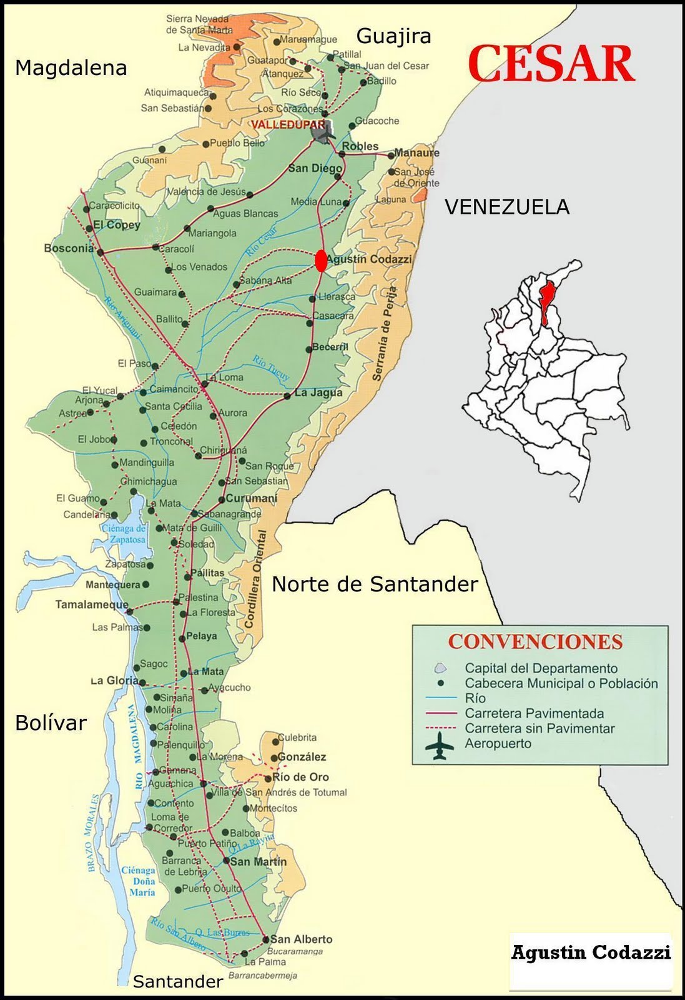
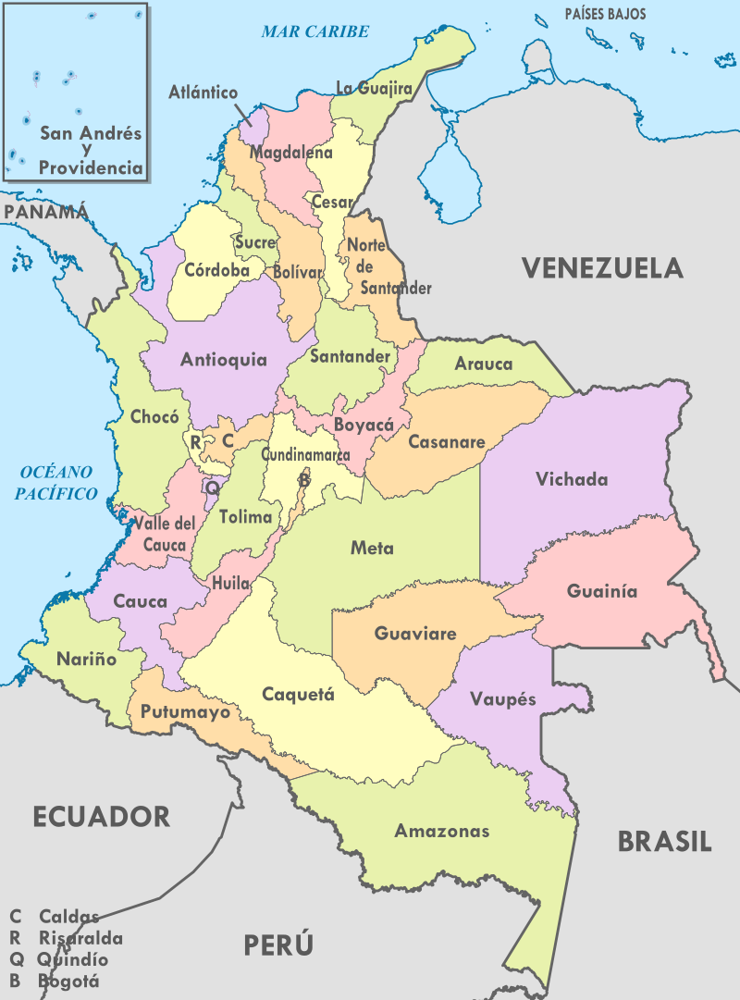
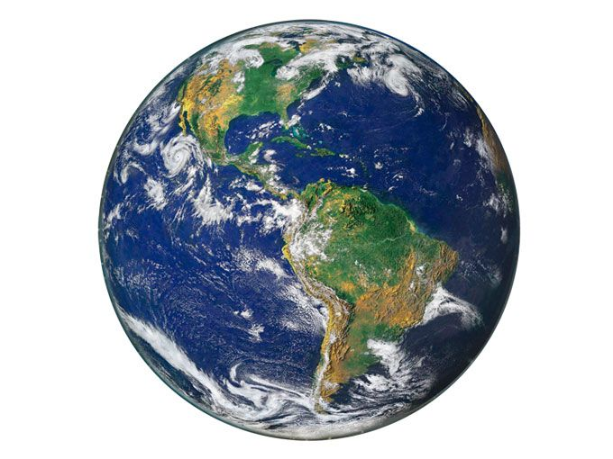

¿Que son los antecedentes?
Son el conjunto de estudios previos que se han realizado sobre el tema que como investigadores hemos decidido investigar, estos pueden ser antecedentes teóricos o antecedentes de campos realizados a nivel nacional, regional o internacional. La construcción de tales antecedentes en los procesos investigativos genera un conjunto de facilidades a los investigadores, por ejemplo: permiten tener mayor conocimiento de la temática a investigar, permiten definir la perspectiva con que se puede realizar el estudio, amplía las concepciones previas sobre el tema a investigar, y proporciona un esbozo o camino para poder finiquitar qué es lo que se va a investigar y cómo se va a investigar
Clasificacion de los antecedentes
antecedentes teóricos, antecedentes internacionales, antecedentes regionales y antecedentes nacionales
Regional
Nacional
Internacional
¿Para que nos pueden servir los antecedentes?
- Nos ayuda a no investigar sobre algún tema que ya se haya estudiado a fondo
- Estructurar más formalmente la idea de investigación
- seleccionar una perspectiva desde la cual se abordará la idea de investigación
Como esta conformado un antecedente
Al comenzar el antecedente damos a conocer el lugar donde se hizo la investigación seguido nombramos el tipo de investigación, título, autores y fecha. Hablamos sobre el objetivo y sus metodologías, mencionamos los resultados obtenidos y para finalizar hablaremos sobre que aportó para la nueva investigación que se va a hacer.
Un ejemplo seria el que hicimos en clase:
En Panamá se llevó a cabo una investigación titulada “Aplicaciones de IoT para el control de congestión vehicular IoT” por los autores (Javier Camarena, Lyanne Contreras, Keisha Moreno , Miguel Rodríguez , Claudio Salazar, 2018), el objetivo general propuesto fue recopilar diversas tecnologías, que han sido desarrollados y aplicadas en diversas partes del mundo para resolver causas del congestionamiento vehicular. como resultados se identificaron las diferentes causas de la congestión vehicular como son la falta de ubicación de parqueaderos disponibles indicaciones de la dinámica del flujo vial y la falta de semáforos inteligentes que tengan un cambio de luces determinadas por la diferentes mediciones recolectadas a través sus sensores igualmente se identificaron técnicas para aportar a las soluciones de estas. Como aporte a la presente investigación se resaltan las técnicas de base tecnológica iot para minimizar las causas de la congestión vehicular utilizando aplicaciones móviles, cámaras y demás dispositivos tic que llevan un registro actualizado.
Que es lo mas importante de un antecedente?
Lo más importante de los antecedentes son sus resultados ya que aquí nos daremos cuenta si es lo que buscamos para nuestra investigación.
¿Porque es importante citar los autores?
Para dar reconocimiento al trabajo que hicieron.
Cuestionario
Cuestionario"Alvarado, J. C. O., & Pérez, A. A. D. (2018). ¿ Cómo redactar los antecedentes de una investigación cualitativa?. Revista electrónica de conocimientos, saberes y prácticas, 1(2), 66-82."